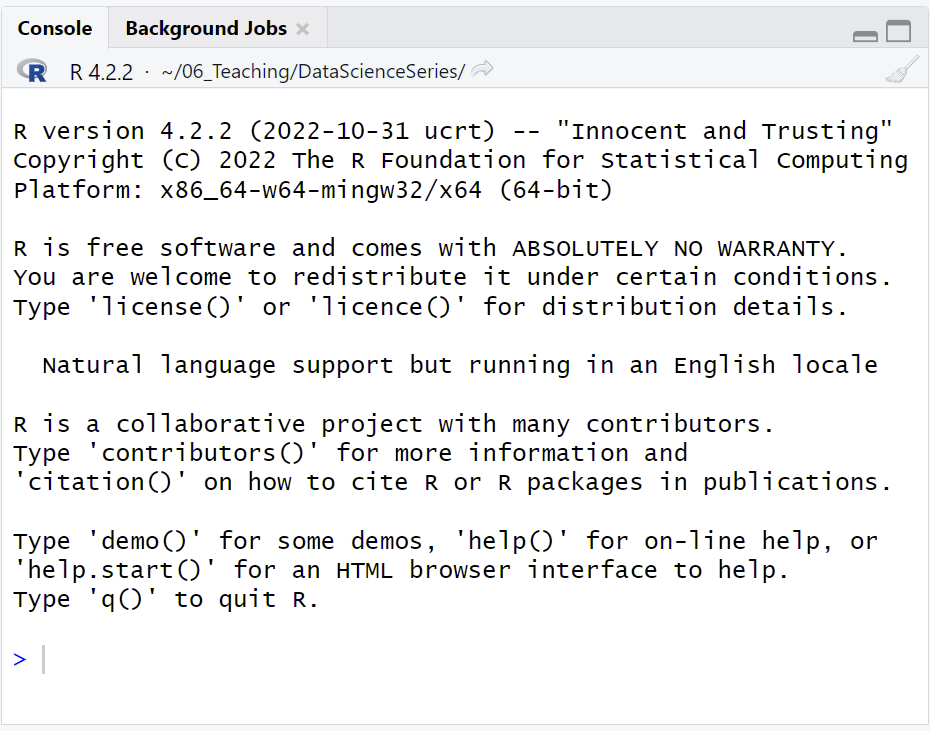
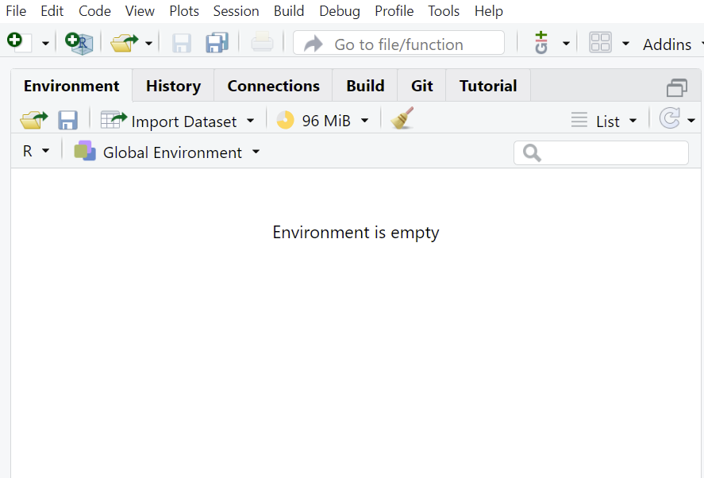
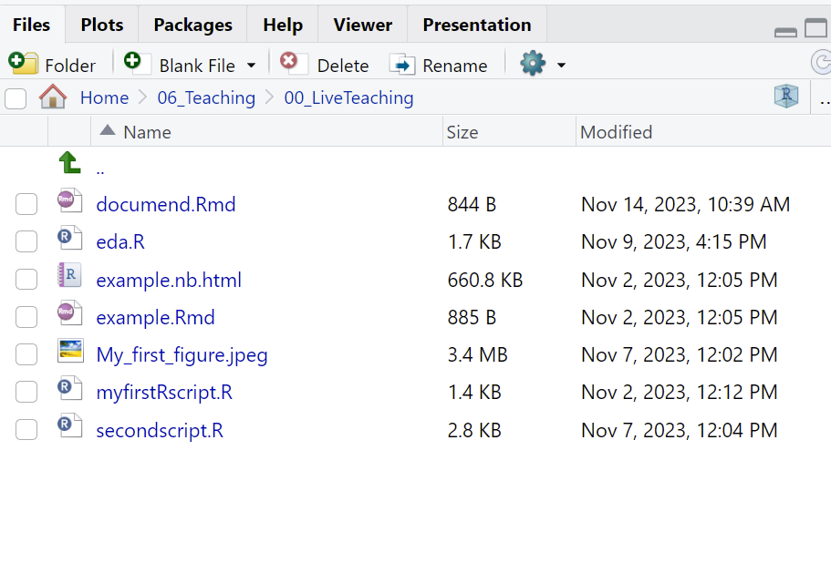

R programming language which originally started as a statistical computing language. RStudio is the IDE (integrated development environment) used for coding and running analysis in R programming language. You can either download a desktop version ( open source, free of cost) or can use the RStudio remote server using a web browser. You can download R and RStudio.
The basics : Using RStudio and R
The three panes are
Console - used for running the code

Environment - has information about the loaded variables and history of commands run (it also has shortcuts for uploading datasets and saving workspace)

Help pane - gives you access to files, plots and package information. Also helpful in saving plots.

You can change where the console is in Rstudio by going to View->Pane->Console on Right. You can also change how the panes look in Rstudio by going to View->Pane->Pane Layout
File and Project management
Rscript
Creating a new R script in RStudio:
Click the “File” menu button, then “New File”.
Click “R script”.
R Notebook and R markdown
Creating a new R script in RStudio:
Click the “File” menu button, then “New File”.
Click “R markdown”.
Enter “title” and “author” name
Choose output format
R Project
Creating a new project in RStudio:
Click the “File” menu button, then “New Project”.
Click “New Directory”.
Click “New Project”.
Type in the name of the directory to store your project, e.g. “my_project”.
Select the checkbox for “Create a git repository” for version control.
Click the “Create Project” button.
Arithmetic operators and comparisons
We can use R for basic arithmetic calculations
Basic calculation
# Calculations1+1# addition
[1] 2
1-5# subtraction
[1] -4
1*3# multiplication
[1] 3
1/6# division
[1] 0.1666667
# Comparisons; evaluates the statement 1==1# equal to comparison; this statement evaluates to TRUE
[1] TRUE
1!=1# not equal comparison; evaluates to FALSE
[1] FALSE
1!=2# not equal comparison; evaluates to TRUE
[1] TRUE
1>2# greater than comparison; evaluates to FALSE
[1] FALSE
1>=2#
[1] FALSE
Comments in R
# single line comment# 1+11+1
[1] 2
"Multi line comment1>2 1>=21/6Everything between quotes"
[1] "\nMulti line comment\n1>2 \n1>=2\n1/6\n\nEverything between quotes\n\n"
Useful Inbuild Functions in R
#Trig functionssin(1)
[1] 0.841471
cos(1)
[1] 0.5403023
# log functionslog(1)
[1] 0
log10(2)
[1] 0.30103
# exponentialexp(1)
[1] 2.718282
Variable assignment
<- is the assignment operator. You can also use = operator i.e. equals to sign. Please make sure there is no space between < and -
Shortcut: Press alt and - together and you will get <-
x <-5/9x
[1] 0.5555556
x <- x +1# variables can also be used to reassignx
[1] 1.555556
# Note that the following two lines of code are same# x = 8 # x <- 8
Rules for variable assignment:
Valid variable names cannot start with a special character or number.
Periods, numbers and underscore are allowed within variable names.
Variable names are case sensitive in R. For example, variables names data.new and data.New are NOT the same.
Variable names can have numeric values within.
Some examples of allowed variable names:
x_new
x.new
xNew
xNEW
Newx
NEW
Newx2
NEW2x
NEW2_x
Vectors
Vectors are the most basic R data objects and there are six types of atomic vectors. They are logical, integer, double, complex, character and raw.
1:10# is a sequence from 1 to 10
[1] 1 2 3 4 5 6 7 8 9 10
x <-1:10# indexing a vector # Index in R starts at 1x[5] # this outputs the 5th element in the vector 5
[1] 5
# subsetting a vectorx <-10:20# this is a vector from 10 to 20x[4:5] # subsetting the element 4th the 5th from the vector
#? # help with a function#?? # Fuzzy search#sessionInfo() # prints out current version and packages loaded
Common R mistakes and how to avoid them
Wrong paths: Make sure you understand the difference between absolute and relative paths of files. Most common errors the beginners face are not being able to load their data because of being in the wrong working directory. Set your working directory at the beginning of R session and make sure your file paths are correctly set.
Pay attention to Errors: If you are a new user or running a new script, make sure to run it line by line to troubleshoot the line giving you the error. Read the error if you are not able to figure it out, copy and paste the error into the search engine.
Not Utilizing available help: Use Help pane, Stackoverflow , Rbloogers or R community available online and at your institution.
Comments in R